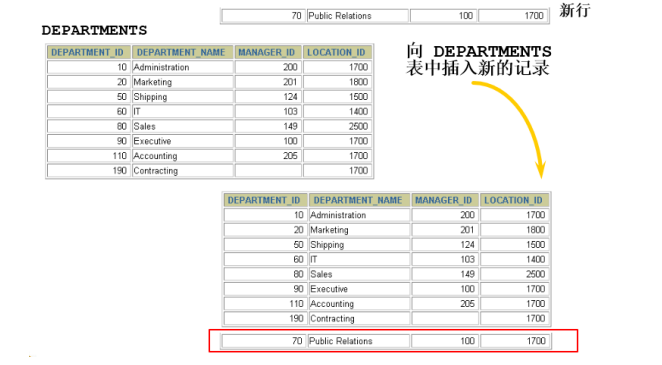
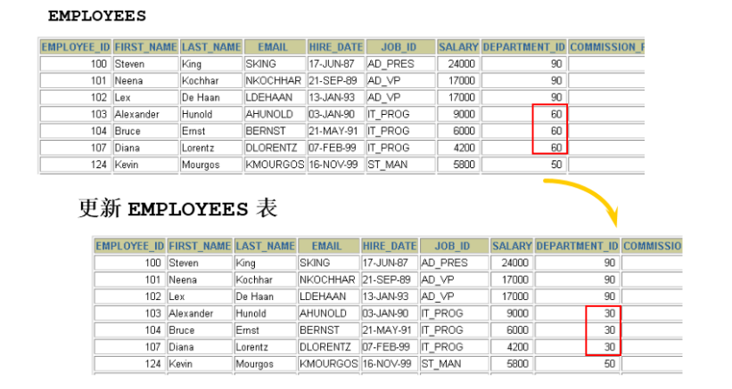
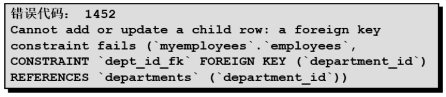
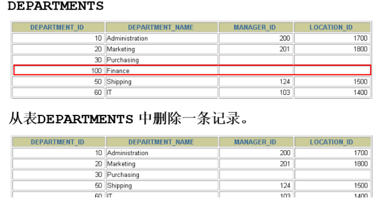
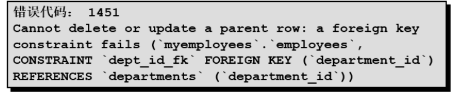
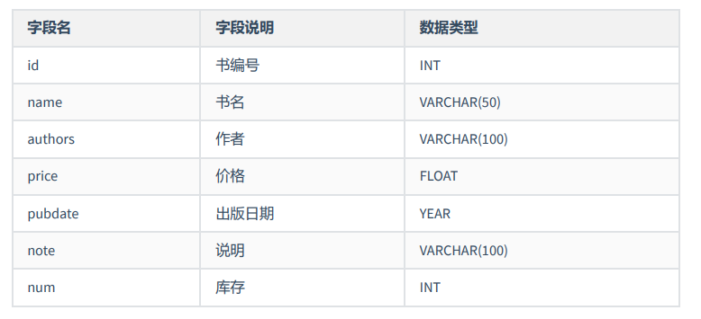

1.插入数据
1.1 插入数据

解决方式：使用 INSERT 语句向表中插入数据。
1.2 插入方式
方式1：VALUES的方式添加
使用这种语法一次只能向表中插入一条数据。
情况1：为表的所有字段按默认顺序插入数据
INSERT INTO 表名
VALUES (value1,value2,....);
值列表中需要为表的每一个字段指定值，并且值的顺序必须和数据表中字段定义时的顺序相同。
INSERT INTO departments
VALUES (70, 'Pub', 100, 1700);
INSERT INTO departments
VALUES (100, 'Finance', NULL, NULL);
INSERT INTO 表名(column1 [, column2, …, columnn])
VALUES (value1 [,value2, …, valuen]);
情况2 ：为指定列添加数据
为表的指定字段插入数据，就是在INSERT语句中只向部分字段中插入值，而其他字段的值为表定义时的默认值。
在 INSERT 子句中随意列出列名，但是一旦列出，VALUES中要插入的value1,….valuen需要与 column1,…columnn列一一对应。如果类型不同，将无法插入，并且MySQL会产生错误。
INSERT INTO departments(department_id, department_name)
VALUES (80, 'IT');
情况3：同时插入多条记录
INSERT语句可以同时向数据表中插入多条记录，插入时指定多个值列表，每个值列表之间用逗号分隔 开，基本语法格式如下：
INSERT INTO table_name
VALUES
(value1 [,value2, …, valuen]),
(value1 [,value2, …, valuen]),
……
(value1 [,value2, …, valuen]);
或者
INSERT INTO table_name(column1 [, column2, …, columnn])
VALUES
(value1 [,value2, …, valuen]),
(value1 [,value2, …, valuen]),
……
(value1 [,value2, …, valuen]);
举例：
mysql>
INSERT INTO emp(emp_id,emp_name)
VALUES (1001,'shkstart'),
(1002,'atguigu'),
(1003,'Tom');
Query OK, 3 rows affected (0.00 sec)
Records: 3 Duplicates: 0 Warnings: 0
使用INSERT同时插入多条记录时，MySQL会返回一些在执行单行插入时没有的额外信息，这些信息的含 义如下：
● Records：表明插入的记录条数。
● Duplicates：表明插入时被忽略的记录，原因可能是这 些记录包含了重复的主键值。
● Warnings：表明有问题的数据值，例如发生数据类型转换。
一个同时插入多行记录的INSERT语句等同于多个单行插入的INSERT语句，但是多行的INSERT语句 在处理过程中 效率更高 。因为MySQL执行单条INSERT语句插入多行数据比使用多条INSERT语句 快，所以在插入多条记录时最好选择使用单条INSERT语句的方式插入。
小结： VALUES 也可以写成 VALUE ，但是VALUES是标准写法。
INSERT还可以将SELECT语句查询的结果插入到表中，此时不需要把每一条记录的值一个一个输入，只需 要使用一条INSERT语句和一条SELECT语句组成的组合语句即可快速地从一个或多个表中向一个表中插入 多行。
基本语法格式如下：
INSERT INTO 目标表名
(tar_column1 [, tar_column2, …, tar_columnn])
SELECT
(src_column1 [, src_column2, …, src_columnn])
FROM 源表名
[WHERE condition]
- 在 INSERT 语句中加入子查询。
- 不必书写 VALUES 子句。
- 子查询中的值列表应与 INSERT 子句中的列名对应。
举例：
INSERT INTO emp2
SELECT *
FROM employees
WHERE department_id = 90;
INSERT INTO sales_reps(id, name, salary, commission_pct)
SELECT employee_id, last_name, salary, commission_pct
FROM employees
WHERE job_id LIKE '%REP%'
2. 更新数据

使用 UPDATE 语句更新数据。语法如下：
[WHERE condition]
- 可以一次更新多条数据。
- 如果需要回滚数据，需要保证在DML前，进行设置：
SET AUTOCOMMIT = FALSE;
使用 WHERE 子句指定需要更新的数据。
UPDATE employees
SET department_id = 70
WHERE employee_id = 113;
如果省略 WHERE 子句，则表中的所有数据都将被更新。
UPDATE copy_emp
SET department_id = 110;
更新中的数据完整性错误
UPDATE employees
SET department_id = 55
WHERE department_id = 110;

说明：不存在 55 号部门，导致删除失败
3. 删除数据

DELETE FROM table_name [WHERE <condition>];
table_name指定要执行删除操作的表；“[WHERE ]”为可选参数，指定删除条件，如果没有WHERE子句， DELETE语句将删除表中的所有记录。
使用 WHERE 子句删除指定的记录。
DELETE FROM departments
WHERE department_name = 'Finance';
如果省略 WHERE 子句，则表中的全部数据将被删除
DELETE FROM copy_emp;
DELETE FROM departments
WHERE department_id = 60;

说明：You cannot delete a row that contains a primary key that is used as a foreign key in another table.
4. MySQL8新特性：计算列
什么叫计算列呢？简单来说就是某一列的值是通过别的列计算得来的。例如，a列值为1、b列值为2，c列 不需要手动插入，定义a+b的结果为c的值，那么c就是计算列，是通过别的列计算得来的。
在MySQL 8.0中，CREATE TABLE 和 ALTER TABLE 中都支持增加计算列。下面以CREATE TABLE为例进行讲 解。
举例：定义数据表tb1，然后定义字段id、字段a、字段b和字段c，其中字段c为计算列，用于计算a+b的 值。 首先创建测试表tb1，语句如下：
CREATE TABLE tb1(
id INT,
a INT,
b INT,
c INT GENERATED ALWAYS AS (a + b) VIRTUAL
);
查询数据表tb1中的数据，结果如下：
mysql> SELECT * FROM tb1;
+------+------+------+------+
| id | a | b | c |
+------+------+------+------+
| NULL | 100 | 200 | 300 |
+------+------+------+------+
1 row in set (0.00 sec)
更新数据中的数据，语句如下：
mysql> UPDATE tb1 SET a = 500;
Query OK, 0 rows affected (0.00 sec)
Rows matched: 1 Changed: 0 Warnings: 0
5.综合案例
# 1、创建数据库test01_library
CREATE DATABASE `test01_library` IF NOT EXISTS CHARACTER SET 'utf8';
USE test01_library;
# 2、创建表 books，表结构如下：
CREATE TABLE IF NOT EXISTS books(
id INT,
name VARCHAR(50),
`authors` VARCHAR(100) ,
price FLOAT,
pubdate YEAR ,
note VARCHAR(100),
num INT
);

# 3、向books表中插入记录
# 1）不指定字段名称，插入第一条记录
INSERT INTO books
VALUES(1,'Tal of AAA','Dickes',23,1995,'novel',11);
# 2）指定所有字段名称，插入第二记录
INSERT INTO books
VALUES(1,'Tal of AAA','Dickes',23,1995,'novel',11);
# 3）同时插入多条记录（剩下的所有记录）
INSERT INTO books (id,name,`authors`,price,pubdate,note,num) VALUES
(3,'Story of Jane','Jane Tim',40,2001,'novel',0),
(4,'Lovey Day','George Byron',20,2005,'novel',30),
(5,'Old land','Honore Blade',30,2010,'Law',0),
(6,'The Battle','Upton Sara',30,1999,'medicine',40),
(7,'Rose Hood','Richard haggard',28,2008,'cartoon',28);
# 4、将小说类型(novel)的书的价格都增加5。
UPDATE books SET price=price+5 WHERE note = 'novel';
# 5、将名称为EmmaT的书的价格改为40，并将说明改为drama。
UPDATE books SET price=40,note='drama' WHERE name='EmmaT';
# 6、删除库存为0的记录。
DELETE FROM books WHERE num=0;
# 7、统计书名中包含a字母的书
SELECT * FROM books WHERE name LIKE '%a%';
# 8、统计书名中包含a字母的书的数量和库存总量
SELECT COUNT(*),SUM(num) FROM books WHERE name LIKE '%a%';
# 9、找出“novel”类型的书，按照价格降序排列
SELECT * FROM books WHERE note = 'novel' ORDER BY price DESC;
# 10、查询图书信息，按照库存量降序排列，如果库存量相同的按照note升序排列
SELECT * FROM books ORDER BY num DESC,note ASC;
# 11、按照note分类统计书的数量
SELECT note,COUNT(*) FROM books GROUP BY note;
# 12、按照note分类统计书的库存量，显示库存量超过30本的
SELECT note,count(*)
FROM books
GROUP BY note
HAVING sum(num)>30;
# 13、查询所有图书，每页显示5本，显示第二页
SELECT * FROM books LIMIT 5,5;
# 14、按照note分类统计书的库存量，显示库存量最多的
SELECT note,SUM(num) sum_num FROM books GROUP BY note ORDER BY sum_num DESC LIMIT 0,1;
# 15、查询书名达到10个字符的书，不包括里面的空格
SELECT * FROM books WHERE CHAR_LENGTH(REPLACE(name,' ',''))>=10;
/*
16、查询书名和类型，
其中note值为 novel显示小说，law显示法律，medicine显示医药，cartoon显示卡通，joke显示笑话
*/
SELECT name AS "书名" ,note, CASE note
WHEN 'novel' THEN '小说'
WHEN 'law' THEN '法律'
WHEN 'medicine' THEN '医药'
WHEN 'cartoon' THEN '卡通'
WHEN 'joke' THEN '笑话'
END AS "类型"
FROM books;
# 17、查询书名、库存，其中num值超过30本的，显示滞销，大于0并低于10的，显示畅销，为0的显示需要无货
SELECT name,num,CASE
WHEN num>30 THEN '滞销'
WHEN num>0 AND num<10 THEN '畅销'
WHEN num=0 THEN '无货'
ELSE '正常'
END AS "库存状态"
FROM books;
# 18、统计每一种note的库存量，并合计总量
SELECT IFNULL(note,'合计总库存量') AS note,SUM(num) FROM books GROUP BY note WITH
ROLLUP;
# 19、统计每一种note的数量，并合计总量(这个用到了rollup)
SELECT IFNULL(note,'合计总数') AS note,COUNT(*) FROM books GROUP BY note WITH ROLLUP;
# 20、统计库存量前三名的图书
SELECT * FROM books ORDER BY num DESC LIMIT 0,3;
# 21、找出最早出版的一本书
SELECT * FROM books ORDER BY pubdate ASC LIMIT 0,1;
# 22、找出novel中价格最高的一本书
SELECT * FROM books WHERE note = 'novel' ORDER BY price DESC LIMIT 0,1;
# 23、找出书名中字数最多的一本书，不含空格
SELECT * FROM books ORDER BY CHAR_LENGTH(REPLACE(name,' ','')) DESC LIMIT 0,1;
6.课后练习
# 1.创建数据库dbtest11
CREATE DATABASE IF NOT EXISTS dbtest11 CHARACTER SET 'utf8';
# 2.创建my_employees表
USE(dbtest11)
CREATE TABLE my_employees(
id INT(10),
first_name VARCHAR(10),
last_name VARCHAR(10),
userid VARCHAR(10),
salary DOUBLE(10,2)
);
CREATE TABLE users(
id INT,
userid VARCHAR(10),
department_id INT
);
# 3. 显示表my_employees结构
DESC my_employees;
# 4. 向my_employees表中插入数据
INSERT INTO my_employees VALUES
(1,'Rpatel','Ralph','Rpatel',895),
(2,'Dancs','Betty','Bancs',860),
(3,'Biri','Ben','Bbiri',1100),
(4,'Newman','Chad','Cnewman',750),
(5,'Ropeburn','Audery','Aropebur',1100);
#5.向user表中插入数据
INSERT INTO users VALUES
(1,'Rpatel',10),
(2,'Bdancs',10),
(3,'Bbiri',20),
(4,'Cnewman',30),
(5,'Aropebur',40);
# 6.将3号员工的last_name修改为'drelxer'
UPDATE my_employees
SET last_name = "drelxer"
WHERE id = 3;
# 7. 将所有工资少于900的员工工资修改为1000
UPDATE my_employees
SET salary = 1000
WHERE salary < 900；
# 8.将userid为Bbiri的users表和my_employees表的记录全部删除
DELETE FROM my_employees
WHERE userid = 'Bbiri';
DELETE FROM userid
WHERE userid = 'Bbiri';
# 9.删除my_employees、users表中的所有数据
DELETE FROM my_employees;
DELETE FROM users;
# 10. 检查是否已经删除
SELECT * FROM my_employees;
SELECT * FROM users;
# 11.清空表my_employees
TRUNCATE TABLE my_employees;
# 1. 使用现有数据库dbtest11
USE dbtest11;
# 2. 创建表格pet
CREATE TABLE pet(
NAME VARCHAR(20),
OWNER VARCHAR(20),
species VARCHAR(20),
sex CHAR(1),
birth YEAR,
death YEAR
);
DESC pet;
# 3. 添加记录
INSERT INTO pet VALUES
('Fuffy','harold','Cat','f','2003','2010'),
('Claws','gwen','Cat','f','2009',NULL),
('Buffy',NULL,'Dog','m','2000',NULL),
('Fang','benny','Dog','m','2009',NULL),
('bowser','dianen','Dog','m','2003','2009');
# 4.添加字段：主人生日 own_birth DATE 类型
ALTER TABLE pet
ADD own_birth DATE;
# 5. 将名称为Claws的猫的主人修改为Kevin
UPDATE pet
SET OWNER = 'Kevin'
WHERE NAME = 'Claws' AND species = 'Cat';
# 6.将没有死的狗的主人改为duck
UPDATE pet
SET OWNER = 'duck'
WHERE death IS NOT NULL AND species = 'Dog';
# 7.查询没有主人的宠物的名字
SELECT NAME
FROM pet
WHERE OWNER IS NULL;
# 8.查询已经死了的cat的姓名、主人、去世时间
SELECT NAME,OWNER,death
FROM pet
WHERE death IS NOT NULL AND species IS 'Dog';
# 9.删除已经死亡的狗
DELETE FROM pet
WHERE death IS NOT NULL
AND species IS 'Dog';
# 10. 查询所有宠物信息
SELECT * FROM pet;
# 1. 使用dbtest11数据库
USE dbtest11;
# 2.创建表employee，并添加记录
CREATE TABLE employee(
id INT,
sex CHAR(1),
tel VARCHAR(35),
addr VARCHAR(34),
salary DOUBLE(10,2)
);
INSERT INTO employee VALUES
(10001,'张一一','男','13522262227','山东青岛'，1000.25),
(10002,'刘晓红','女','13533262223','河北保定'，1201.25),
(10003,'李四','男','0760-21251255','广东中山'，2000.25),
(10001,'刘小强','男','0755-5555555','广东深圳'，5000.25);
# 3.查询处薪资在1200-1300之间的员工信息
SELECT * FROM employee
WHERE salary BETWEEN 1200 AND 1300;
# 4. 查询处姓"刘"的员工的姓名、工号、家庭地址
SELECT NAME,id,addr
FROM employee
WHERE NAME LIKE "刘%";
# 5.将“李四”的家庭住址改为“广东韶关”
UPDATE employee
SET addr="广东韶关"
WHERE NAME = "李四";
# 6.查询名字中带有“小”的员工信息
SELECT * FROM employee
WHERE NAME LIKE "%小%";